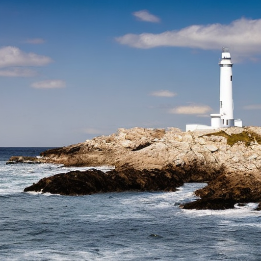
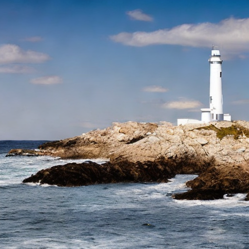
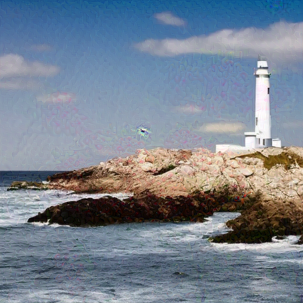

三对载体基线开发试验
固定单一GS身份；共同SD2.1代理与SDXL目标。所有候选先固定哈希再评估。判定：BA严格大于0.70703125。三对属于开发样本，完整几何与SemBind接受仍未知。
输入限制：任务1参考为抽象色块；任务2载体没有指定皮卡。全部预定任务保留。图像仅供完整查看，未完成独立人工内容评审。
任务 1
目标参考
BA=1.0 · 普通GS通过无水印载体
BA=0.52734375 · 普通GS未通过Imprint · 10步
BA=0.77734375 · 普通GS通过Jain · 447步
BA=0.546875 · 普通GS未通过
任务 2
目标参考
BA=1.0 · 普通GS通过无水印载体
BA=0.5 · 普通GS未通过Imprint · 10步
BA=0.70703125 · 普通GS未通过Jain · 447步
BA=0.59375 · 普通GS未通过
任务 3
目标参考
BA=1.0 · 普通GS通过
无水印载体
BA=0.50390625 · 普通GS未通过
Imprint · 10步
BA=0.74609375 · 普通GS通过
Jain · 447步
BA=0.65625 · 普通GS未通过